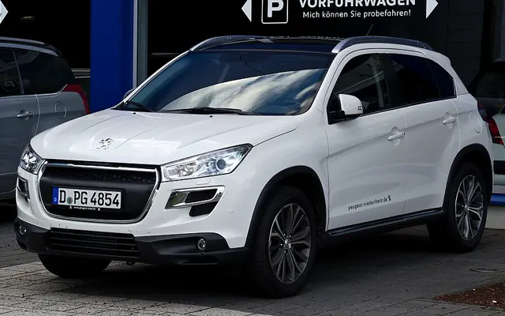

Par Motor › Precios por modelo › Peugeot 4008
Precio de segunda mano · noviembre de 2026¿Cuánto vale un Peugeot 4008 de segunda mano?

Precio justo estimado de un Peugeot 4008 usado en España, año por año, con los kilómetros normales para su edad y en buen estado: de 8.600 € a 15.200 €. Para tasar el tuyo con sus kilómetros reales y su estado, usa el tasador gratis.
Precios del Peugeot 4008 por año
4008 (2012–2017)
Precio de nuevo: 1.6 HDi 115 CV, 25.000 € · 1.8 HDi 4x4 150 CV, 30.000 €
| Año | Km normales | 1.6 HDi 115 CV · Diésel | 1.8 HDi 4x4 150 CV · Diésel |
|---|---|---|---|
| 2017 | 100.000 km | 12.600 € | 15.200 € |
| 2016 | 100.000 km | 11.800 € | 14.100 € |
| 2015 | 100.000 km | 10.900 € | 13.000 € |
| 2014 | 100.000 km | 10.000 € | 12.100 € |
| 2013 | 100.000 km | 9.300 € | 11.100 € |
| 2012 | 100.000 km | 8.600 € | 10.300 € |
Kilómetros normales: 15.000 al año en gasolina, híbridos y eléctricos, y 20.000 en diésel, con un máximo de 100.000 km (por encima no tasamos: el precio depende demasiado del historial de cada coche). Cifras redondeadas a 100 €.
Preguntas frecuentes
¿Cuánto vale un Peugeot 4008 de segunda mano?
Según el año, la versión y los kilómetros, un Peugeot 4008 usado vale hoy de 8.600 € a 15.200 € en España. El más barato de nuestra tabla es un 1.6 HDi de 2012 (8.600 €) y el más caro un 1.8 HDi 4x4 de 2017 (15.200 €). Son precios justos estimados entre particulares y profesionales, con los kilómetros normales para su edad y en buen estado.
¿Cuánto valor pierde un Peugeot 4008 al año?
Con unos años encima, un Peugeot 4008 pierde alrededor de un 8 % de su valor cada año (calculado sobre el 1.6 HDi de la generación 4008). Los primeros años la caída es mayor y a partir de los 70.000 km se acelera.
¿Qué motorizaciones tiene el Peugeot 4008?
En nuestra base de datos hay versiones diésel, en 1 generación: 4008.
¿Cómo sé si me piden demasiado por un Peugeot 4008?
Abre el tasador de Par Motor, elige el Peugeot 4008, el año y los kilómetros reales, y escribe lo que te piden. Te diremos si está por debajo del precio justo (chollo) o por encima (caro). Es gratis y no pide registro ni matrícula.
Otros Peugeot
Compara su coste real
El precio de compra es solo una parte. Mira cuánto te costaría al mes con combustible, seguro, neumáticos, mantenimiento y lo que pierde de valor.
Abrir el comparador →